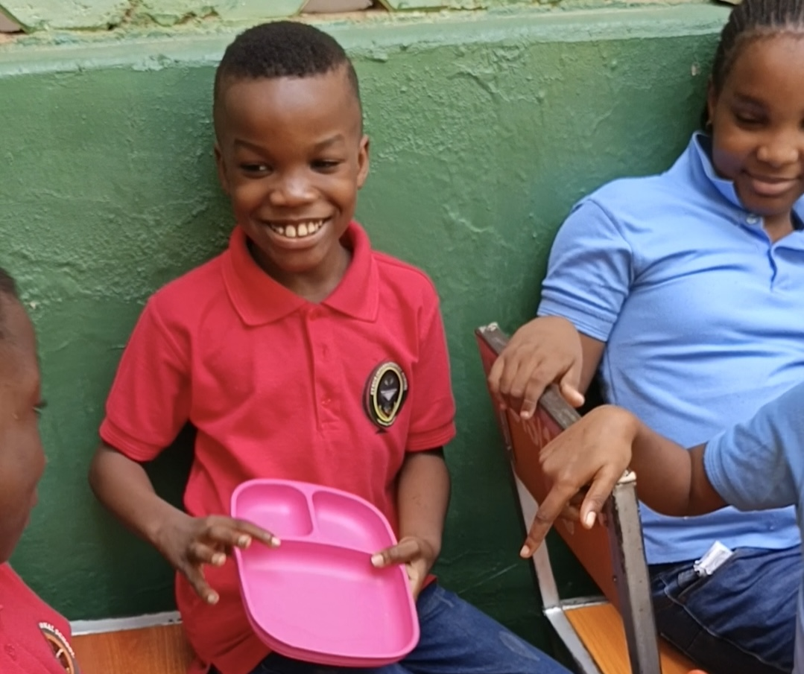

The Nigeria Chapter:
Where FWESS Began

Pupils Reached
Pilot Duration
Age Range
Pilot School
In a green courtyard at Cyrus International School in Abuja, 65 children between the ages of 7 and 11 spent four weeks learning something most adults still struggle with: how to see food as something worth protecting. It was the first real world test of the FWESS curriculum outside Egypt, delivered in partnership with Discovery Foundation, and it worked.
The pilot combined classroom discussion with hands on learning, games, role play, poster presentations, and a practical composting demonstration, so pupils could understand not just what food waste is, but why it happens and what they could personally do about it.
Four Weeks
Meeting Food Waste
Pupils learned what food waste actually means, and why it matters, hunger, money, the environment, through discussion and real examples.
Understanding Why It Happens
Through role play and group discussion, pupils explored everyday choices behind food waste and suggested real alternatives.
Making It Personal
Pupils made individual commitments to reduce food waste, then designed and presented posters explaining their pledge.
Pledge Wall & Composting
Built a Food Waste Pledge Wall, then closed with a hands-on composting demo turning food scraps into school garden fertilizer.
The Numbers
Pupils were assessed before the pilot began and again once it ended. The change speaks for itself.
| What We Measured | Before | After |
|---|---|---|
| Understanding of food waste | 18% | 95% |
| Could identify ways to reduce food waste | 25% | 97% |
| Understood composting | 5% | 90% |
| Committed to reducing food waste | 45% | 100% |
In Their Own Words
"I have learned not to waste food because many people do not have enough to eat. I will only take what I can finish and teach my family what I learned."
"I didn't know fruit peels could be turned into compost. Now I know food waste can help plants grow instead of being thrown away."
Teachers noticed the shift extend beyond the classroom too. Pupils began raising food waste in conversation unprompted, and paid closer attention to portions during school meals, small signs of a habit taking hold rather than a lesson being memorized.
"Serving as the Nigeria Research and Implementation Lead for the FWESS pilot provided valuable insight into how sustainability education actually lands in a Nigerian school context," said Ihuoma C. Ephraim-Ugboh. "Children learn best through active participation and real opportunities to apply what they've learned, not lectures."
Looking Ahead
The Nigeria pilot didn't just prove that FWESS works, it showed what comes next: more schools, trained facilitators, and school gardens built from the compost pupils learn to make themselves. It's also the model our Egypt chapter, launching soon, will build on.